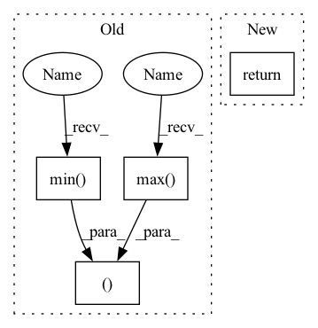

Pattern ID :3541
Before Change
np_polygon = np.array(polygon.exterior.coords)
image_width, image_height = image_bounds
min_c = np.min( np_polygon, axis=0)
max_c = np.max( np_polygon, axis=0)
h_extend = int(round(0.1 * (max_c[1] - min_c[1])))
w_extend = int(round(0.1 * (max_c[0] - min_c[0])))
min_row = np.maximum(0, min_c[1] - h_extend)
min_col = np.maximum(0, min_c[0] - w_extend)
max_row = np.minimum(image_height, max_c[1] + h_extend)
max_col = np.minimum(image_width, max_c[0] + w_extend)
return min_row, min_col, max_row, max_col
def get_bboxes_from_polygons(polygons: List[Polygon]) -> List[Tuple]:
return [p.bounds for p in polygons]After Change
Tuple: extended bounds
np_polygon = np.array(polygon.exterior.coords)
return get_extended_bounds_from_np_array_polygon(
np_polygon, image_bounds, extend_factor=extend_factor
)
In pattern: SUPERPATTERN
Frequency: 4
Non-data size: 4
Instances Fragment ID: 13605526
Project Name: dsgoficial/pytorch_segmentation_models_trainer
Commit Name: 2b8d58fa4129e5244a7313dcc00b1bea7fd6ed1d
Time: 2021-11-26
Author: philipeborba@gmail.com
File Name: pytorch_segmentation_models_trainer/utils/polygonrnn_utils.py
M Class Name: AnonimousClass
N Class Name: AnonimousClass
M Method Name: get_extended_bounds(3)
N Method Name: get_extended_bounds(3)
M Parent Class:
N Parent Class:
M File Name: pytorch_segmentation_models_trainer/utils/polygonrnn_utils.py
N File Name: pytorch_segmentation_models_trainer/utils/polygonrnn_utils.py
M Start Line: 452
M End Line: 462
N Start Line: 452
N End Line: 455
Before Change
for class_ in classes:
class_indices = np.argwhere(segmentation_map == class_)
min_values = np.min( class_indices, axis=0) // x, y, z
max_values = np.max( class_indices, axis=0)
// Apply padding to bounding boxes
min_values -= padding
max_values += padding
assert min_values[0] < max_values[0]
assert min_values[1] < max_values[1]
assert min_values[2] < max_values[2]
bbox = {
"bbox": np.hstack((min_values, max_values )),
"label": class_
}
After Change
bboxes.append(torch.hstack((min_values, max_values))) // x1, y1, z1, x2, y2, z2
batch_bboxes.append(torch.vstack(bboxes))
return batch_bboxes, batch_classes
def iou_3d(bboxes1, bboxes2):
Determines the intersection over union (IoU) for two sets of Fragment ID: 13605525
Project Name: bwittmann/transoar
Commit Name: 1d0dfda78d476d74cfda6bde7ef5be249c33736a
Time: 2021-11-03
Author: wittmann_@gmx.de
File Name: transoar/utils/bboxes.py
M Class Name: AnonimousClass
N Class Name: AnonimousClass
M Method Name: segmentation2bbox(2)
N Method Name: segmentation2bbox(2)
M Parent Class:
N Parent Class:
M File Name: transoar/utils/bboxes.py
N File Name: transoar/utils/bboxes.py
M Start Line: 18
M End Line: 45
N Start Line: 8
N End Line: 34
Before Change
// Normalization to range [-1, 1]
if isinstance(self.observation_space, Box):
low, high = self.observation_space.low, self.observation_space.high
low_min, low_max, high_min, high_max = low.min(), low.max(), high.min(), high.max()
assert low_min == low_max and high_min == high_max
low, high = low_min, high_max
mid = (low + high) / 2
delta = high - midAfter Change
def _preprocess(self, input_data):
// SB will normalize to [0,1]
return preprocess_obs(input_data, self.observation_space,
normalize_images=True)
def _preprocess_extra_context(self, extra_context): Fragment ID: 13605524
Project Name: humancompatibleai/eirli
Commit Name: d5530a68c5cfc02ee83fc5c648ab0490b7ae2172
Time: 2020-08-18
Author: sam@qxcv.net
File Name: src/il_representations/algos/representation_learner.py
M Class Name: RepresentationLearner
N Class Name: RepresentationLearner
M Method Name: _preprocess(2)
N Method Name: _preprocess(2)
M Parent Class: BaseEnvironmentLearner
N Parent Class: BaseEnvironmentLearner
M File Name: src/il_representations/algos/representation_learner.py
N File Name: src/il_representations/algos/representation_learner.py
M Start Line: 139
M End Line: 147
N Start Line: 141
N End Line: 142
Before Change
// Normalization to range [-1, 1]
if isinstance(self.observation_space, Box):
low, high = self.observation_space.low, self.observation_space.high
low_min, low_max, high_min, high_max = low.min(), low.max(), high.min(), high.max()
assert low_min == low_max and high_min == high_max
low, high = low_min, high_max
mid = (low + high) / 2
delta = high - midAfter Change
def _preprocess(self, input_data):
// SB will normalize to [0,1]
return preprocess_obs(input_data, self.observation_space,
normalize_images=True)
def _preprocess_extra_context(self, extra_context): Fragment ID: 13605523
Project Name: humancompatibleai/eirli
Commit Name: 513d43f8f8dd93c2d461b52df168ef5593f9c419
Time: 2020-08-18
Author: sam@qxcv.net
File Name: src/il_representations/algos/representation_learner.py
M Class Name: RepresentationLearner
N Class Name: RepresentationLearner
M Method Name: _preprocess(2)
N Method Name: _preprocess(2)
M Parent Class: BaseEnvironmentLearner
N Parent Class: BaseEnvironmentLearner
M File Name: src/il_representations/algos/representation_learner.py
N File Name: src/il_representations/algos/representation_learner.py
M Start Line: 139
M End Line: 147
N Start Line: 141
N End Line: 142